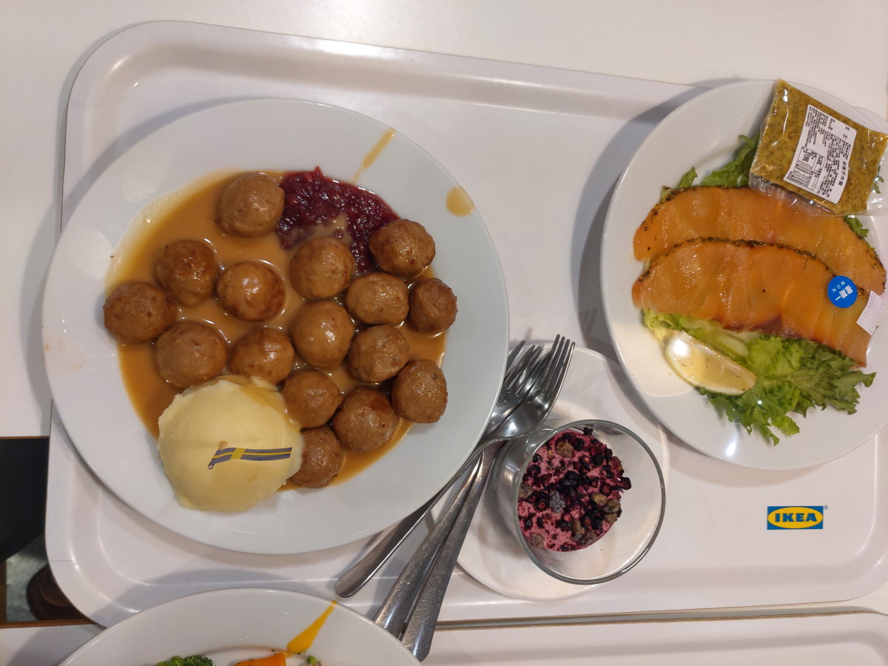

[桃園] IKEA桃園店 餐廳
| 餐廳名稱: | IKEA桃園店 官網 |
|---|---|
| IKEA桃園店 FB | |
| 地 址: | 桃園市桃園區中山路958號 |
| 營業時間: | 宜家家居餐飲營業與供餐時間 |
| 週一至週日及國定假日：09:00~20:30 | |
| 早餐：9:00~10:30 | |
| 熱食主餐：11:00~20:30 週六 ~ 週日 8:00~20:00 | |
| 電 話: | 電話直撥：4128869 按3 轉接桃園店, 手機直撥：02-4128869 按3 轉接桃園店 |
大賣場的餐廳， IKEA 算是其中的佼佼者，它定價便宜，要吸引你來買家具，然後 賣少見的瑞典風味食物，其實我也沒覺得特別好吃，只是幾年沒吃了，剛好要逛家具， 再加上假日慵懶地時間大亂，正常餐廳大多開始午休了，就決定逛 IKEA ，抵達餐聽 時間是不正常的假日下午兩點多。
假日下午兩點多，入口處排很多人。
點餐處，很多人，這張照片是快用完餐時拍的，當時快下午四點了吧。
座位區的相片，這張也是快用完餐時拍的，點餐時，我先去找位子，不誇張，幾乎每張桌子的 不遠處，都站著一個排隊的人。我也是定點站了30分鐘，才等到一個桌子空出來，中間還要 微笑示意，把沒看到我，想排我選定桌子的趕走，所幸大家還算文明，沒發生什麼爭吵。
點餐的出口處，可以拿餐具。
點飲料的話，是到座位區這裡裝，可續杯。
站了30分鐘，得到座位，室友也差不多點餐完，得到餐點，推著推車過來了。點了 龍蝦香料飯， 門口看板說是 330 元，相當便宜，雖然那是 便宜的 波士頓龍蝦，嚴格說起來不是龍蝦，是商人 的噱頭給大螯蝦取個好名字，但這個價位也是很有誠意了。套餐似乎是飲料加薯條。
路上做的功課，網友說炸雞翅很優，印象中也是很便宜，不過重點是好吃，確實工讀生按照 SOP ， 炸到一個 外酥內軟的境界。
瑞典牛肉丸 是 這裡的特色，那個醬汁很不錯，還加一匙 蔓越莓醬，結帳出口後有個小商店， 這些食材都有賣。曾經買生牛肉丸回去，可是醬汁不會弄，還是乖乖地來這裡享受就好。
鮭魚生菜沙拉是個失敗產品，工讀生事前就打包好，封膜，放冰箱，吃的時候， 不知道放多久了，生菜都枯萎了，鮭魚也略乾。 
用餐完，要自行收拾，將餐具放到回收區，那邊就懶的拍了。
IKEA 的 食物 當然也不是多美味，但是那個價位很佛心，只是今天被人潮嚇到，還是不能 隨興來吃，要精準地選擇冷門時段，才能好停車 兼 用餐不用排太長的隊，不用去搶座位， 下次一定要注意。